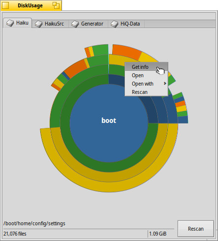

DiskUsage
DiskUsage
| Deskbar: | ||
| 場所: | /boot/system/apps/DiskUsage | |
| 設定ファイル: | ~/config/settings/DiskUsage |
DiskUsage はディスクの容量がどのように使われているのかをグラフィカルに表示します。
「ディスク容量はどこに費やされているか?」といったことがわかる便利なツールです。
起動後、DiskUsage は、白いウィンドウを表示します。その上には、マウントされたすべてのボリュームがタブで表示されます。ディスクの読み込みを開始するには、興味のあるボリュームを選んで、 をクリックする必要があります。大きなディスクに対しては、多少時間がかかるかもしれません… 待っている間、別のタブに移動してそのボリュームを調べることや、そこで同様にスキャンプロセスを開始することができます
同じ物理ディスク上で同時にいくつかのスキャンをすることはお勧めしません。ドライブヘッドの再ポジショニングを繰り返すことは待ち時間を伸ばすだけだからです。

同心円のそれぞれがファイルシステムの階層を表しています。上記のように、一番中心の円が /boot/home/ フォルダーを、そのすぐ外側の円形のブロックが /boot/home/ 以下のファイルやフォルダーを示しています。ファイルシステムの階層が深くなるごとに円形のブロックが外側に追加されていくので、深い階層のフォルダーの情報を見るためにはウィンドウサイズを変更する必要があるかもしれません。
- 図で角度が 2゜に満たないサイズのファイルやフォルダーは表示されません。
- フォルダー内のファイルの数には、サブフォルダー内のファイルの数も含まれていて、フォルダーもファイルと同じように数えられます。
- シンボリックリンクは無視します。
マウスをあるブロックの上に重ねると、そのファイルやフォルダーの情報がいちばん下のステータスバーに表示されます。
セグメントを右クリックして表示されるコンテキストメニューには次のものがあります。、Tracker で、、または、指定領域を
セグメントの左クリックで、そのファイルやフォルダーを中心円にします。
中心円で左クリックをすると、表示されている階層が 1 つ上がります。
ファイルとフォルダーを DiskUsage からドラッグすると、ほかのアプリケーション、デスクトップ、または Tracker にコピーできます。同様に、ディスクやフォルダーを DiskUsage のウィンドウにドロップすれば、その使用量が新しく中心円に表示されます。
また、どのフォルダーのコンテキストメニューからでも Tracker アドオンを使って、DiskUsage を特定の場所から起動できます。